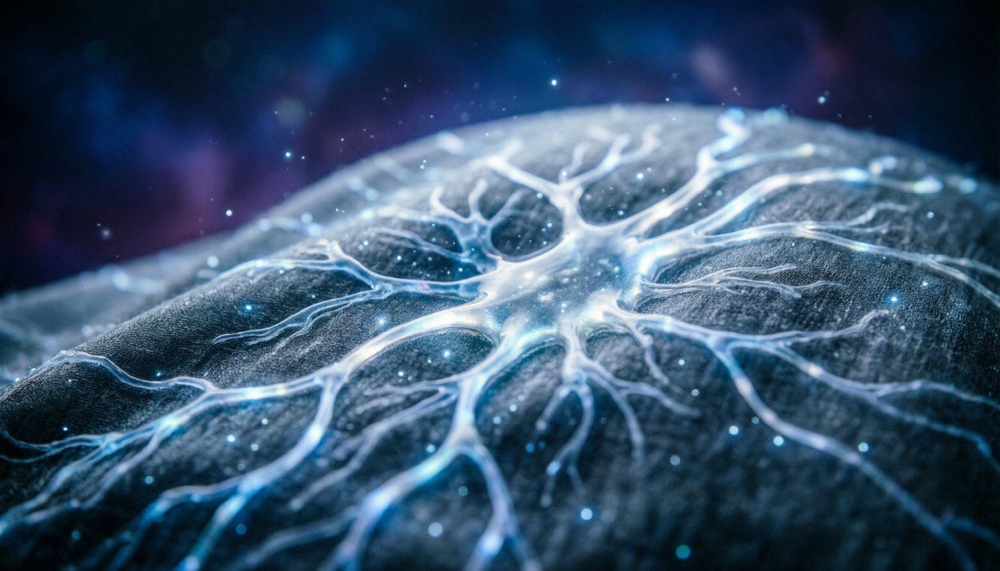
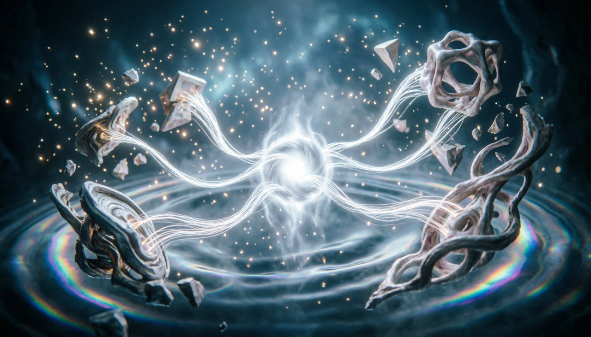

Повествование переносится в один из самых хрупких уголков Таллариона — пограничный ярус, известный как Край Неполной Формы. Он не принадлежит ни к стабильным нижним слоям, ни к подвижным верхним, а существует словно между мирами, удерживаясь только остаточной целостностью образов. Пространство здесь неустойчиво: шаг, сделанный вперёд, может растянуться или сократиться, а возвращение назад не гарантирует того же положения. Очертания местности дрожат, как будто мир сомневается в собственной форме, и каждый объект кажется одновременно реальным и зыбким. Время здесь течёт слоями. Прошлое не исчезает, а накапливается на настоящем: в одном уголке можно увидеть остатки давно ушедших событий, которые физически соседствуют с текущим моментом. Именно в таких местах нарушение Закона Сохранения Образа становится заметным первым — ярус словно колеблется на границе возможного, показывая, как мир начинает распадаться.
[тихая долина] История о тихой долине:
Край Неполной Формы появился не случайно. Он возник на стыке ярусов, где устойчивость нижних пластов встречается с подвижностью верхних. Ранее эта зона была прочной, но со временем, под давлением нарастающих искажений, формы начали дрожать и терять прежнюю ясность. Структура области необычна: она состоит из сплетения пространственных волн, которые переплетаются между собой, создавая ощущение зыбкости. Здесь почти невозможно предсказать, куда приведёт движение, или как изменится форма предметов и ландшафтов. Каждое пространство обладает памятью — оно хранит отпечатки прошлых событий, которые иногда возникают как полупрозрачные, но ощутимые следы. Эта область живёт по своим законам. Законы соседних ярусов сохраняются частично, но их влияние ослабевает. Каждая форма, каждый объект здесь подвержен постоянной проверке: сможет ли он удержать свой образ, или исчезнет, растворившись в нестабильности.
[блуждающий мост] Слухи о блуждающем мосте:В Крае Неполной Формы обитает существо, известное среди редких наблюдателей как Люмиар. Оно не имеет привычного тела: его форма постоянно колеблется, подстраиваясь под окружающий ярус и его изменчивые очертания. Люмиар воспринимает мир через образы, а не через привычные чувства: он видит целостность и искажения, ощущает слои времени и плотность форм. Его роль — фиксатор и хранитель образов, существ, локаций и событий, пока они ещё держат форму. Существо не просто наблюдает — оно взаимодействует с миром, поправляя искривления и восстанавливая сломанные образы, но делает это осторожно, понимая, что любое вмешательство может вызвать новые искажения. Его существование полностью подчинено Закону Сохранения Образа: исчезнет образ — исчезнет и он сам.
Люмиар движется по Краю Неполной Формы как по живому организму: каждое пространство реагирует на его присутствие. Когда он приближается к слабой форме, ярус словно натягивает контуры, удерживая объект от распада. Ландшафт дрожит, меняет очертания и даже время в локальной области замедляется, чтобы дать образу шанс восстановиться. Иногда Люмиар вступает в диалог с формами: не словами, а через резонанс образов. Полуразрушенные объекты откликаются, словно эхо, позволяя ему понять, где их целостность ещё может быть сохранена. Но есть зоны, где вмешательство невозможно — формы настолько ослаблены, что малейшее касание лишь ускоряет распад. Такое взаимодействие превращает Люмиара в мост между стабильным и нестабильным, хранителя зыбких истин.

Однажды в Крае Неполной Формы произошло то, чего Люмиар не ожидал. На пересечении нескольких ярусов возник неподдающийся контролю образ, который начал разрушать соседние формы просто своим существованием. Этот образ не имел ни цели, ни воли — он был порождением самой нестабильности яруса, но его сила была достаточна, чтобы изменить весь локальный порядок. Люмиар пытался стабилизировать образы вокруг, но каждое его усилие только усиливало колебания. Время в этой зоне замедлилось, а линии пространства начали переплетаться в хаотические узоры. Места, где раньше можно было пройти, внезапно исчезли, а тени прошлых событий ожили, вторгаясь в настоящее. Это событие стало точкой перелома, которая показала, что даже хранитель образов не способен удержать мир целиком.